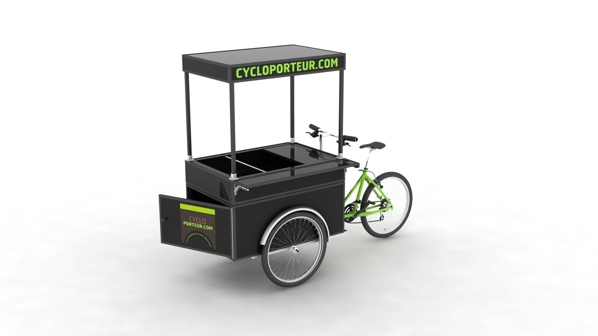
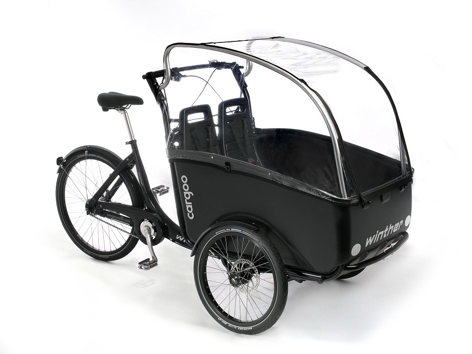
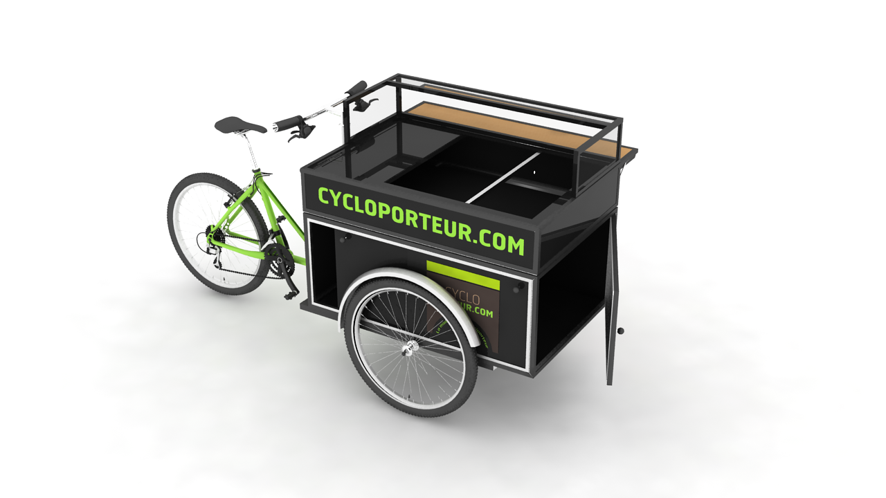
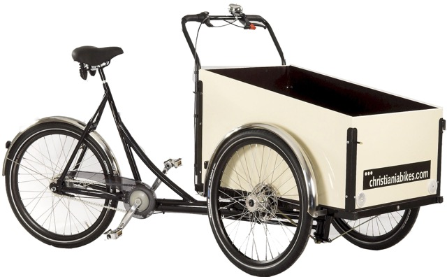

Accueil
Faire réaliser son vélo triporteur sur mesure ? Vous êtes à la bonne place !
En effet, CYCLOPORTEUR.COM manufacture localement et selon vos besoins le vélo adapté à vos activités, qu'elles soient professionnelles ou familiales.
Le triporteur !
Utilisés depuis plus d’un siècle, les triporteurs, remorques et biporteurs disposent d’une malle ou caisse conséquente pouvant transporter indifféremment la famille ou les courses pour un usage particulier, ainsi que tout type de marchandise pour un usage professionnel, telle que la vente ambulante.
Notre métier : soutenir vos projets et concepts dans l’esprit de votre entreprise grâce à nos solutions sur mesure.




Cycloporteur.com, une marque de STRUCTURES MOBILES ET COMPAGNIE S.A.S.